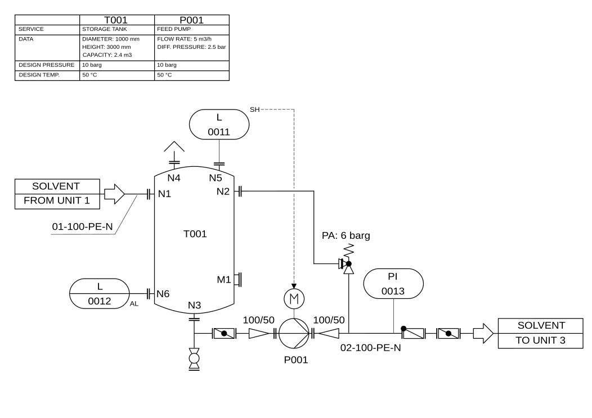
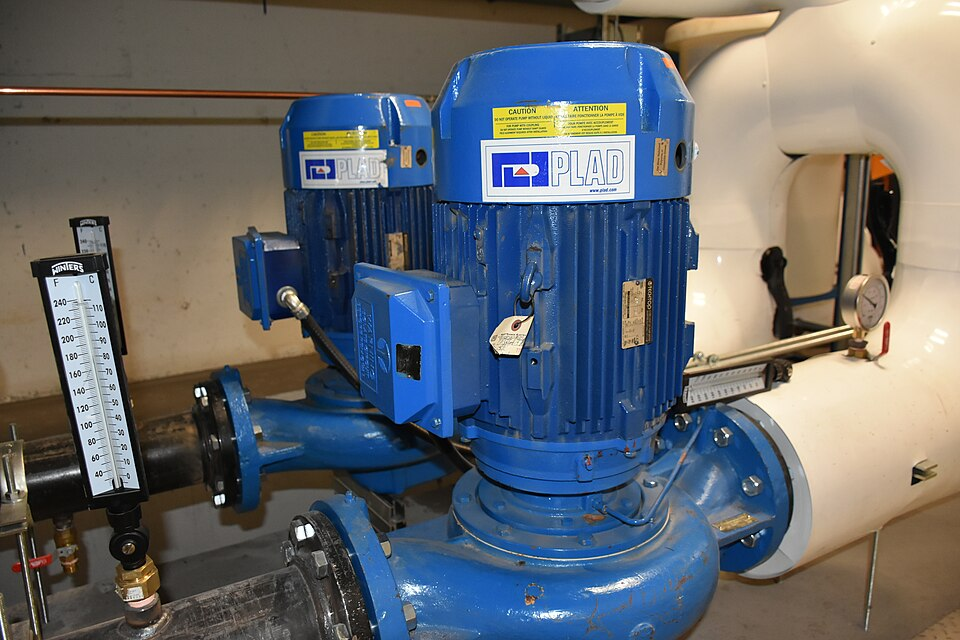
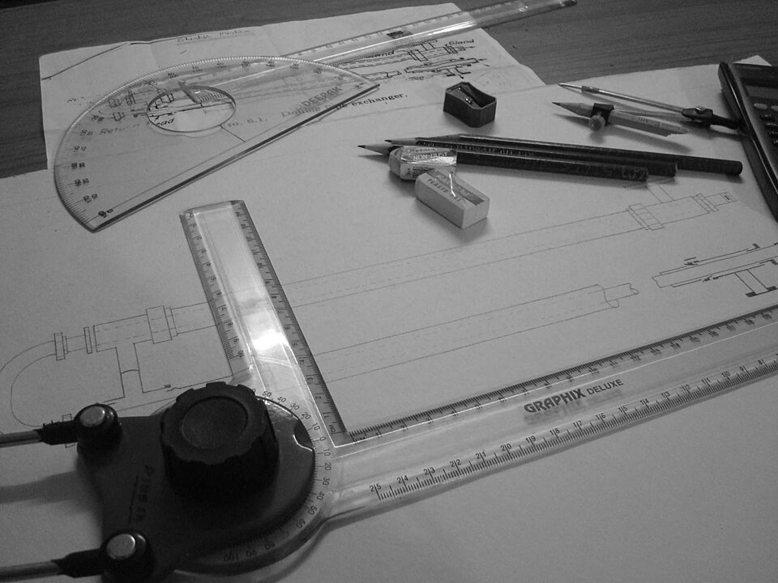
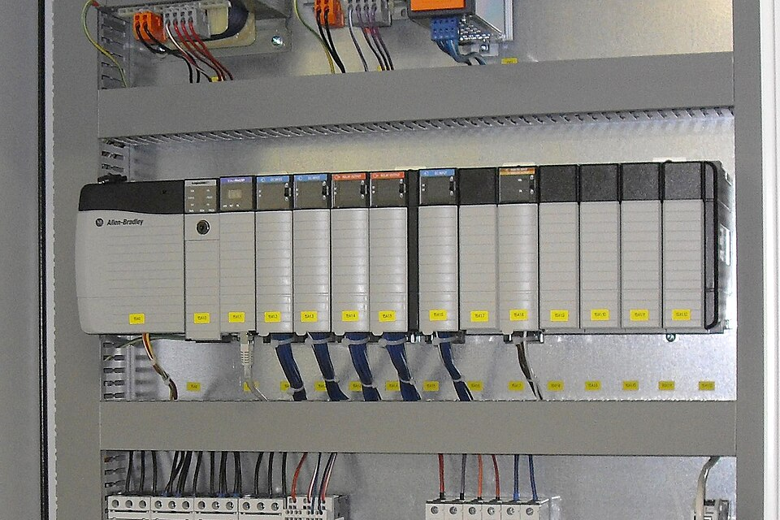
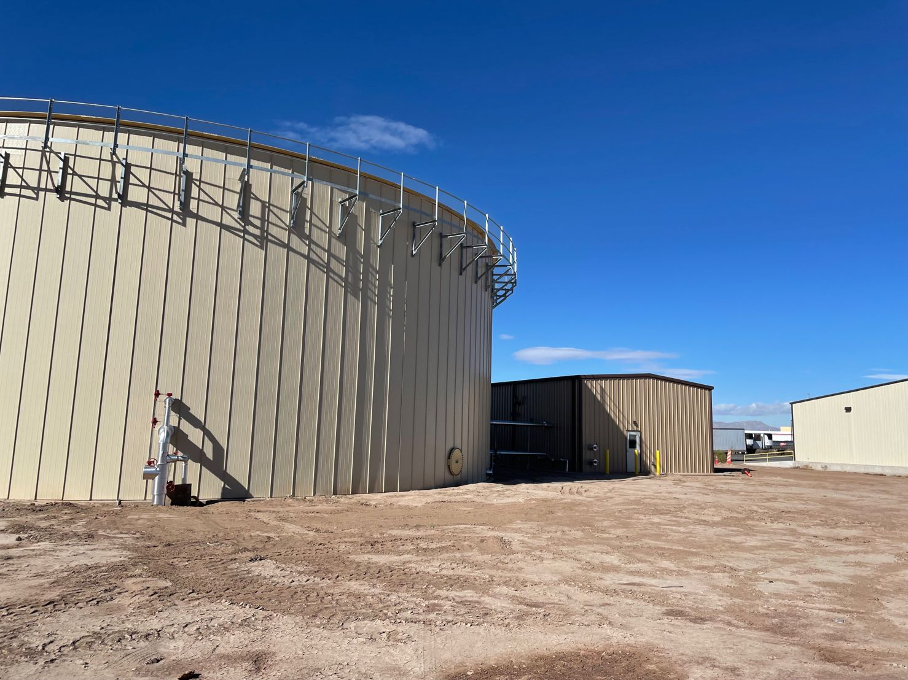
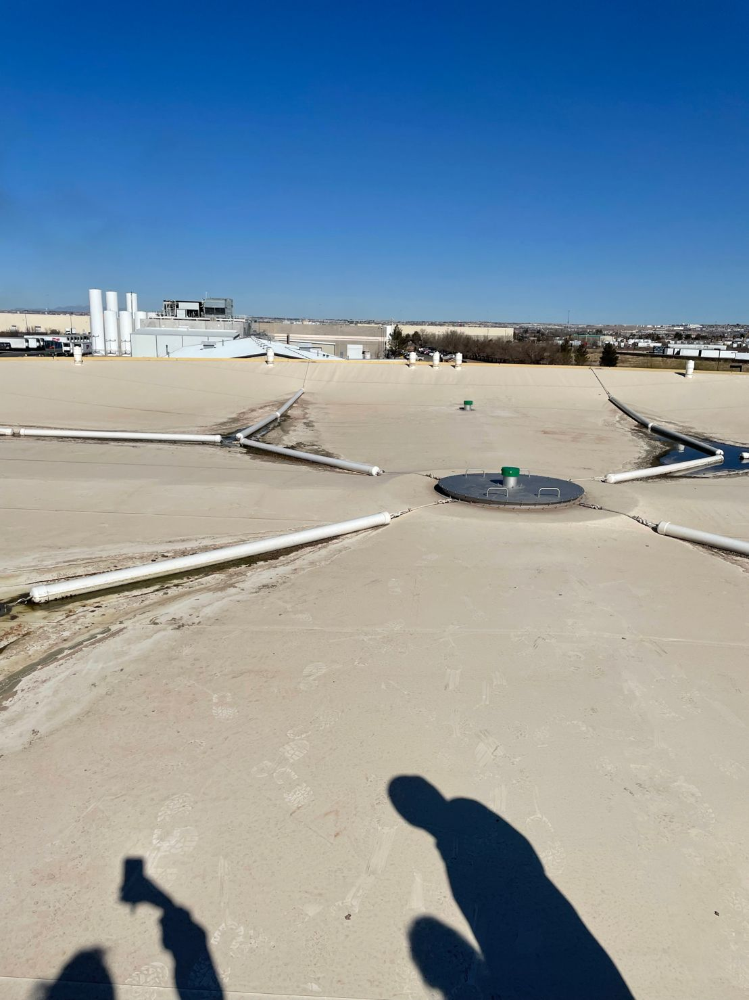

Anaerobic Digestion Project — California
2024Started up and commissioned an anaerobic membrane bioreactor system, from project execution through commissioning — assisting with P&IDs and O&M manuals along the way.
Chemical Engineer, P.Eng · Biological Wastewater Treatment
Application Engineer II at Grundfos (NewTerra), based in Canada — designing and proposing biological wastewater treatment systems since 2022.
I'm a Professional Engineer (P.Eng) working on biological wastewater treatment systems since 2022. I currently work as an Application Engineer II at Grundfos (NewTerra), reviewing customer specifications, developing commercial strategies with sales and operations, and preparing proposals — technical equipment details, process flow diagrams, layout drawings, and discharge criteria — for competitive projects.
Before that, I spent over three years at Xylem as an Application Engineer, taking full-scale wastewater treatment projects from proposal through process design, P&IDs and O&M manuals, start-up and commissioning, and equipment selection — pumps, blowers, and valves.

01P&IDs, process flow diagrams, and O&M manuals for full-scale biological wastewater treatment systems.

02Sizing and selecting pumps, blowers, and valves for treatment systems.

03Technical proposals, commercial strategy, cost estimating, and bid submission management.

04Coordinating with electrical engineers and subcontractors to commission and start up treatment systems.
Started up and commissioned an anaerobic membrane bioreactor system, from project execution through commissioning — assisting with P&IDs and O&M manuals along the way.
Worked with the senior process engineer on wastewater system design from proposal development through project execution, answering client questions and providing process inputs.
Visited an active anaerobic digestion project to see an ADI-BVF reactor in operation firsthand — witnessing the reactor's conversion of organic waste into renewable biogas, including a climb to the top of the reactor, about 30 ft above ground.


Interested in connecting or discussing a project? Reach out below.